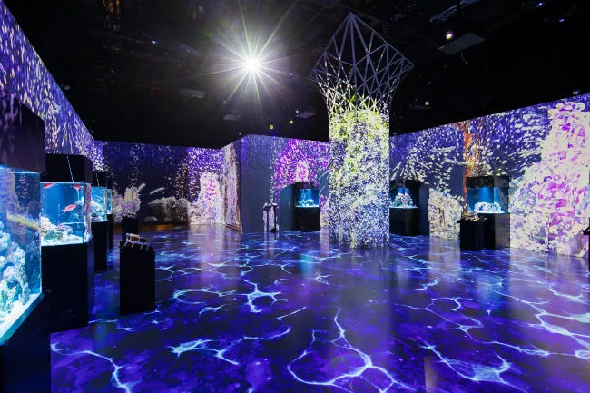
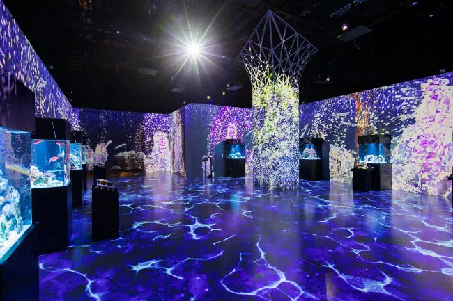

Tateshina Amusement Aquarium, Nagano Japan


Went in 2016. So far my favorite place because it is known for showcasing Arowana, Pirarucu, and other rare fresh-water fish.
Journey
Went in 2016. So far my favorite place because it is known for showcasing Arowana, Pirarucu, and other rare fresh-water fish.


Went in 2022. Famous for Orca and Dolphin performances. Although, because of opposing opinions, they no longer do Orca shows. It is currently under major construction for renewal.

Went in 2022. Its turtles exibition is very much loved by many visitors. They have 4 different species of sea turtle.
 

Went in 2022. Its signature dolphins show is very famous not only for how well they are trained but waterfall technology and spotlights. The show is especially beautiful when its dark so visitors come even in the evening.

Went in 2022 and 2023. One of the most reasonable aquarium to go, yet large and beautiful place. The school of tuna is so impressive. When it's their feeding time, they go frenzy and so powerful that you may even think they are going to burst out from their tank!

Went in 2023. I was very pleased with how they beautifully display fish. As you can see in the pictures, they have beautiful fish–including ones that are Japan exclusive–and they have this jellyfish-river stream going down the hallway. Absolutely worth going.

There is still a journey ahead...
Places I Want to Go
Return to Top